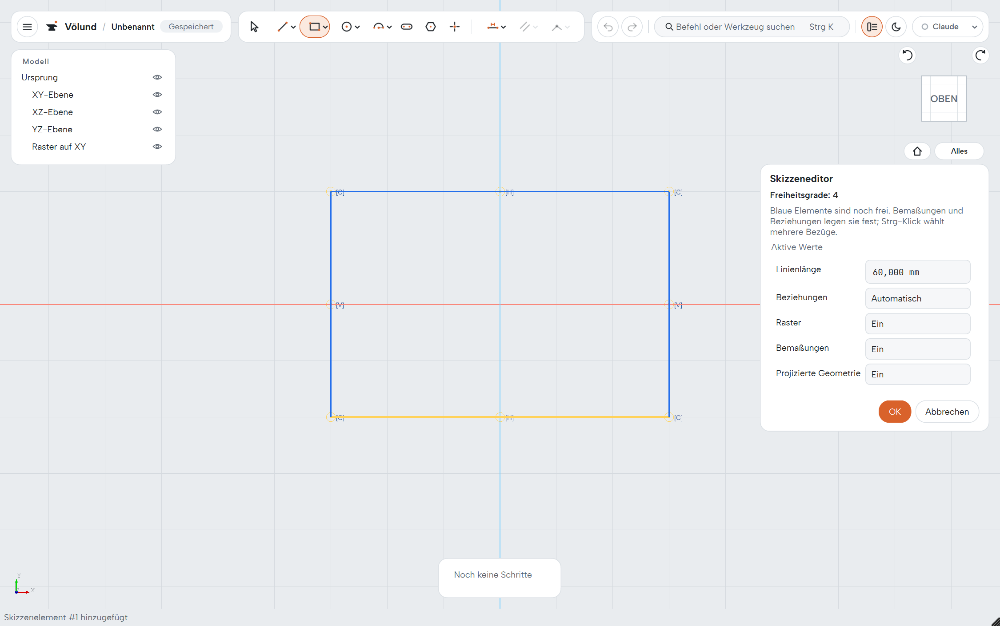
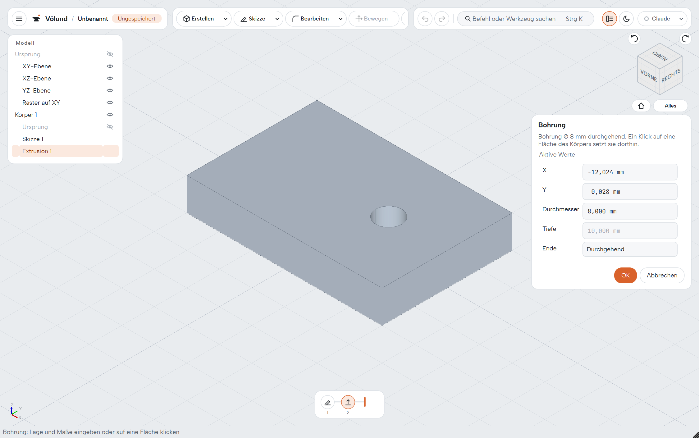
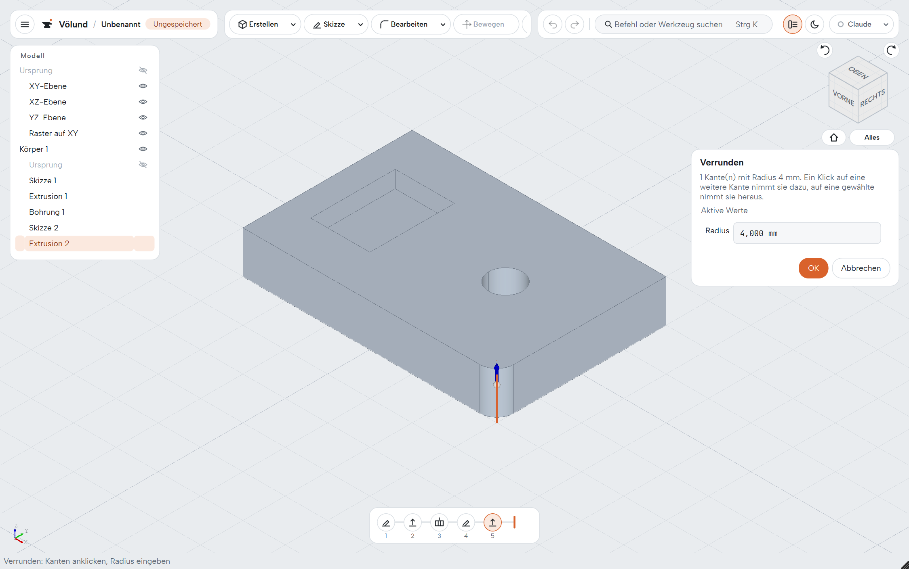
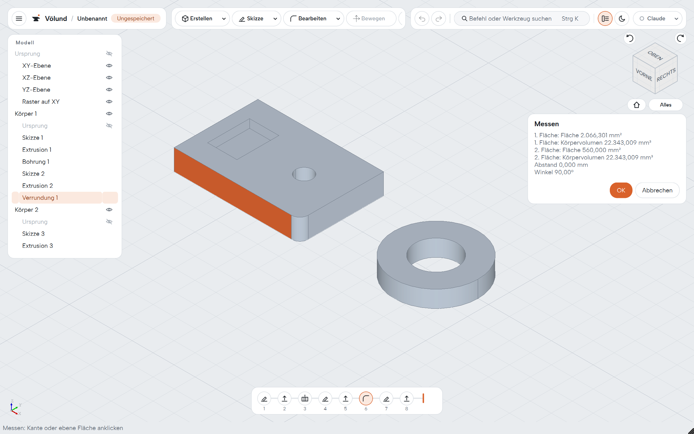
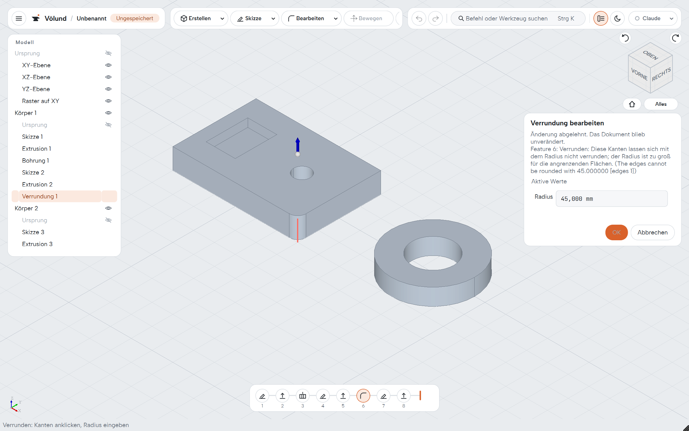
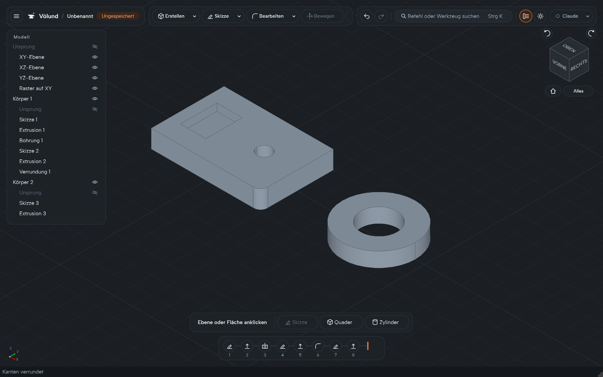

From a sketch to a finished part
Every screenshot here was made by a program that drives the real application with clicks and typed values – the same way its acceptance tests do. The user interface is German.

Sketches with a real solver
Lines, rectangles, polygons, circles, arcs, ellipses, slots and B-splines on base planes, construction planes or body faces. Relations and dimensions are solved by PlaneGCS; free geometry stays blue until it is fully determined. Trim, extend, offset, mirror and pattern right in the sketch.

Features with live preview
Extrude, push/pull, revolve, sweep, loft, helix, holes, shell, draft, mirror, patterns, primitives, combine and move. Every tool opens one panel: OK is one undo step, Cancel leaves the document untouched.

Fillets and chamfers that survive changes
Pick edges in the view, drag the radius with a grip. Edges are named by the faces they join, so the fillet finds its edge again when earlier features change.

Measure without changing anything
Two clicks give length, radius, area, volume, distance and angle. Values copy at full precision.

Errors are explained, never hidden
An impossible change keeps the panel open, marks the cause in red and says why. Nothing is ever repaired by guessing or deleted silently.

A history you can work with
The timeline reopens any step, suppresses it, rolls the model back, reorders steps by dragging and shows what depends on a step before it goes. Parameters and expressions drive any dimension. Light and dark themes, command search (Ctrl+K), autosave and crash recovery.
Talks to the rest of your workshop
Imported solids are embedded in the document and stay editable – fillet them, drill them, move them. Exports take the selected bodies or everything visible.
Rules every change has to follow
Völund is planned and built in the open: bounded work packages, each with acceptance scenarios and recorded evidence.
Native all the way down
C++20, Qt 6 Widgets, OpenCASCADE for geometry and OCAF for documents. No Python, no Electron, no web view.
Stable names, not indices
Faces and edges are named by where they came from, so later features find them again after earlier ones change.
One step per intent
Every command is one document transaction and one undo step. Previews never touch the document.
Explicit over clever
No guessed repairs and no silent deletion. When something breaks, Völund shows where and lets you decide.
Wayland first
A native Wayland client on Linux; Qt owns the window and the OpenGL context. Windows is a full platform too.
Tested through the real product
End-to-end tests click the real buttons and type into the real fields on a virtual desktop in CI.
Version 0.1 – on the way to v1
The mechanical core is complete. The current round adds what v1 still needs before the first release packages for Windows and Linux:
- Section view, display styles and body colours
- Material, mass and centre of gravity
- More hole, chamfer and pattern variants
- Text in sketches, DXF import
Progress is tracked in the implementation plan and the changelog.
From source
Windows, from a Developer PowerShell:
./tools/setup-windows.ps1
cmake --build --preset windows-msvc
./tools/test-windows.ps1Linux: tools/setup-linux.sh builds the pinned OpenCASCADE profile, then
cmake --build --preset linux-desktop. Details are in the
README.